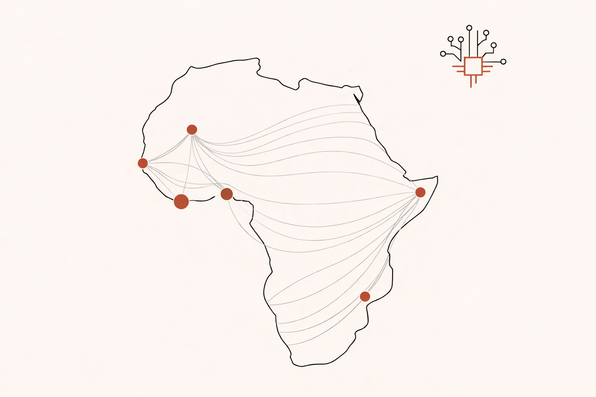

AI in Africa: Beyond the Hype, Who is Actually Figuring It Out?
The winners won't be building foundational LLMs. They'll be the operators who use AI as a surgical tool to fix structural inefficiencies that every African business already knows about - and has lived with for decades.

Africa loses between 30 and 50 percent of agricultural output between the farm and the end consumer. Not because the crops fail. Because the logistics, the information, and the trust infrastructure required to move them efficiently simply does not exist at scale. That gap is not a tech problem. It is a platform economics problem. And it is exactly the kind of structural inefficiency where AI - deployed correctly - stops being a buzzword and starts being a business.
Let me be honest upfront: I came to this analysis without a strong prior on AI in African markets. My background is in scaling digital products across telecoms, fintech, and banking on the continent - not in AI infrastructure. But the emerging markets platform economics question kept pulling me back. After spending time with the data and the companies actually operating in this space, I think the fog is starting to lift in a few specific areas. This piece is my attempt to map where the AI in Africa investment opportunity is genuinely clustering - and where it is mostly noise.
The framing matters. Africa's AI winners won't be those building foundational large language models. The compute infrastructure, the data labelling ecosystem, the capital intensity - those conditions do not yet exist at the scale required. What does exist is a continent full of structural inefficiencies that AI, used as a surgical tool, is uniquely positioned to address. The platform economics are already in place. The incumbents are entrenched. The data is there - it is just dark, buried in mobile money logs and airtime top-ups and informal transaction records. AI is the unlock.
The Personal Digression: When the Expert Walks Out the Door
I want to start with something I saw repeatedly across multiple markets and sectors before we get to the investment thesis. It is not glamorous, but it is the foundation of everything that follows.
Every organisation I worked with across Africa had the same structural vulnerability. When a key employee left - a product manager who understood a market, a finance officer who had built relationships with a regulator, a technician who knew how the billing system actually worked - their knowledge walked out the door with them. Not because companies were careless. Because the knowledge was never systematised. It lived in one person's head, one person's WhatsApp threads, one person's informal understanding of how things actually got done versus how the org chart said they got done.
The emerging markets context makes this worse. Attrition rates in high-growth digital sectors in Africa are punishing. The talent pool in specialised digital roles is still relatively thin in many markets. And the cost of institutional knowledge loss is not just operational - it resets relationships, it restarts negotiations, it burns the trust that, as anyone who has operated in these markets knows, takes months or years to build.
This is the AI use case that does not get discussed in Silicon Valley. Not AGI. Not foundation models. Institutional memory as infrastructure. The AI that captures, structures, and makes retrievable the knowledge that currently disappears every time someone moves on. In an emerging market context, this is not a nice-to-have. It is a survival mechanism for scaling digital operations.
With that grounding, here is where the real AI disruption in Africa is starting to cluster.
1. AI in Africa's Cognitive Supply Chain: Fixing the Leak
The 30-50 percent post-harvest loss figure is the entry point into one of the most underdiscussed AI investment opportunities on the continent. The problem in African agricultural supply chains has never been production - it has been prediction. When you cannot reliably forecast harvest volumes, quality, or timing, the entire logistics chain that feeds off that information becomes reactive and expensive. Trucks drive half-empty. Cold storage gets overbooked or underutilised. Informal retailers overbuy and waste, or underbuy and stock out.
AI is being applied here not for conversational interfaces, but for prediction at the input layer. By layering satellite imagery with hyper-local weather data and historical yield patterns, agricultural AI platforms are making harvest cycles and quality grading predictable 10 to 14 days in advance. That is enough lead time to dynamically price freight, pre-position logistics capacity, and connect informal retailers to supply before the market moves.
The platform economics here are powerful. This is the same unit economics logic I analysed in the Jumia PUDO pivot - the insight that the real moat in African logistics is not the last mile delivery, it is the information layer that makes the last mile predictable. Applied to agriculture, that information layer makes fragmented supply chains bankable. When a bank or insurer can see a 10-day harvest forecast with satellite verification, the risk of lending to a smallholder farmer collapses. That is not a marginal improvement. That is a structural unlock for a credit market that has historically excluded the majority of Africa's agricultural economy.
The investment signal: B2B logistics platforms that use AI to dynamically price freight against harvest prediction data. Companies like Aerobotics, using AI and satellite data to help banks and insurers de-risk agricultural loans, and early movers like Twiga Foods, which used data-driven loops to manage the B2B supply chain for informal retailers, are the template. The question for VCs is not whether this category works - it does. The question is which companies have built the data moat deep enough that a competitor cannot simply replicate the model with a better API.
2. Behavioral Credit Architecture: The End of Collateral
The unbanked narrative in Africa is well-rehearsed at this point. But the more precise diagnosis is not that the data does not exist - it is that the data is dark. Mobile money transaction logs, airtime top-up frequency, utility bill regularity, merchant POS activity: all of this is behavioural financial data that exists in structured form and has never been systematically used for credit assessment at scale.
AI is the bridge that turns these chaotic data points into what I would call a Behavioral Credit Score - a creditworthiness signal built not from collateral or formal salary slips, but from the actual financial behaviour of the informal economy. In a continent where 80 percent or more of GDP flows through the informal sector, this is not a niche product. It is the foundation of a completely different financial infrastructure.
The investment play here is embedded finance. The most interesting companies are not the ones that look like banks. They are the ones that act like banks from inside a merchant's POS system, or a logistics app, or a mobile money wallet. AI-driven credit scoring baked into the daily workflow of a business that has never had a banking relationship is how you reach the informal economy without the overhead of physical branches or traditional collateral requirements.
This connects directly to the stablecoin infrastructure thesis I explored earlier - the pattern of financial infrastructure being built at the edges of the formal system, in the gaps where traditional finance either cannot reach or has not bothered to look. The companies building here - Jumo building the infrastructure that allows banks to lend to mobile money users at scale, Oze turning MSME daily business data into creditworthiness signals in West Africa - are not building fintech products. They are building the plumbing for a credit market that did not previously exist.
The operator's read on embedded finance AI: Every fintech founder I have encountered in francophone Africa who tried to build a standalone credit scoring product eventually discovered the same thing - the distribution problem is harder than the model problem. The AI that wins here is the AI that gets embedded into a distribution channel the target user already trusts and uses daily. The model is secondary. The GTM is primary. This is the same pattern I documented in the VAS and telco platform economics breakdown - the companies that won were not the ones with the best content, they were the ones with the best pipes.
3. Augmented Human-in-the-Loop: Scaling the Expert
The arithmetic of professional talent in Africa does not work using 20th-century models. Training doctors, teachers, and skilled technicians at the rate required to serve a population growing at the current pace is not possible through conventional workforce development pipelines. This is not a criticism - it is a structural constraint that most VC investment theses in African healthcare and education simply do not adequately price in.
AI changes the unit economics of expert delivery. A nurse with an AI-enabled diagnostic tool can now identify pathologies that previously required a specialist. A field technician with an AI co-pilot can troubleshoot industrial equipment faults that previously required an engineer on-site. A teacher with an AI-assisted assessment platform can personalise learning at scale across a class of 60 students in a way that was not previously achievable without one-to-one tutoring.
The investment model here is B2B SaaS - platforms sold to private health networks, NGOs, governments, or large industrial operators that allow one trained professional to do the work of five by automating the diagnostic or administrative heavy lifting. This is where the institutional memory problem I described earlier becomes directly investable. An AI co-pilot that captures the diagnostic reasoning of a senior doctor, or the maintenance logic of a master technician, and makes it retrievable and applicable by a less experienced operator - that is not just a productivity tool. It is a knowledge infrastructure play.
This is also the category that unlocks institutional and ESG capital. These businesses solve for access - a politically compelling narrative for development finance institutions and impact funds - while maintaining a high-margin software model. Companies like mPharma, using AI to manage inventory and patient adherence across a large pharmacy network, and Zipline - whose real competitive advantage is not the drone hardware but the AI-driven logistics engine managing autonomous life-saving deliveries in complex airspaces - are the operational templates.
The connection to the infrastructure depth thesis from the Airtel analysis is direct here. The companies building AI-augmented expert delivery are not competing on breadth of coverage. They are going deep into specific institutional relationships - a hospital network, a government health ministry, an industrial operator - and building the kind of indispensable data moat that makes switching costs prohibitive. That is the platform economics play in human-capital-constrained markets.
The Operator's Take: Distribution is the Real AI Moat in Africa
If you are a VC fund looking at AI in Africa, here is the thing I keep coming back to. Everyone is using roughly the same APIs. The foundation model differentiation that drives investment theses in Silicon Valley - the race to build bigger and better LLMs - does not translate to emerging markets strategy. The compute advantage is not durable at the application layer. What is durable is distribution.
The companies that will win the AI in Africa race are the ones that, like the partner-first models we see in industrial digital transformation, figure out how to embed AI into the daily workflows of people who have never heard of ChatGPT but desperately need their problems solved. A farmer who needs to know whether to harvest now or wait three more days. A nurse who needs a second opinion on a chest X-ray before the specialist arrives. A logistics coordinator who needs to know where to position trucks before the harvest peak arrives.
These are not AI-native use cases in the Silicon Valley sense. They are structural inefficiency use cases that happen to be solvable with AI. The unit economics of addressing them are compelling precisely because the baseline is so inefficient. A 10 percent improvement on a 40 percent post-harvest loss rate is not a marginal gain - it is a structural transformation of a supply chain's profitability.
AI is the engine. In Africa, GTM and distribution are the steering wheel. The operator who understands this - who has lived through the institutional memory problem, who knows what it costs when the knowledge walks out the door, who has built trust with partners over years of consistent delivery - is not a technology risk. That operator is the distribution moat.
- TechCabal - AI and fintech infrastructure coverage across African markets
- Techpoint Africa - Emerging markets digital economy analysis
- GSMA Mobile for Development - Infrastructure and digital access research
- Operational experience across telecoms, fintech, and banking across African markets, 2012-2026